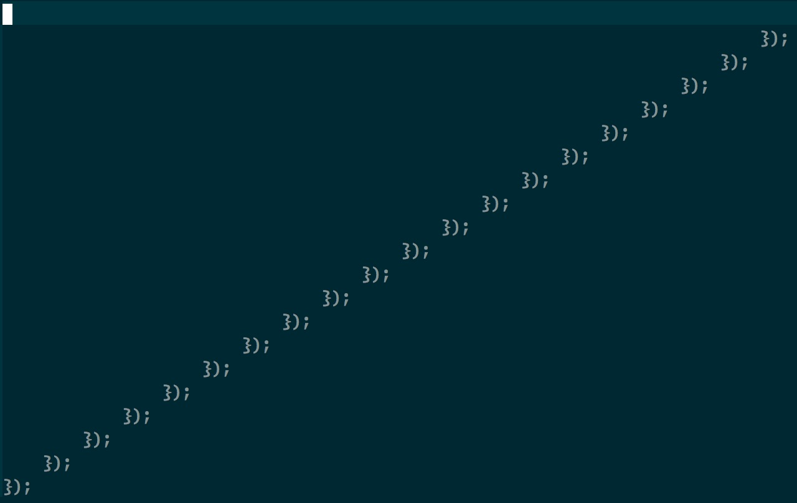

Things below are my little experiments & self-entertaining projects.
Code Player
This app is a good example of something that is both useless and super fun.
Back to a normal working day in early 2014, TJ was still the big boss in town, AngularJs was hot and trendily and haven't meet his arch enemy Re**t, nobody would compiles javascript except coffescript evangelists, when people talk about async in javascript, usually end the conversation with the comparison between generator and promise and how they save us from callback hell.

I was debugging a perfectly crafted callback-based nodeJs application, with
my colleague Eyal Arubas. The application was so
well organized that even if there were function(err, data){ and if(err) return
console.error(err); all over the place and some indents almost touch the
80-chars-limitation line, it still looks sort of beautiful, especially when you
look at it on Sublime's minimap. Rotate your neck by 90 degrees and you will
see the famous Yosemite. The mountain line goes up and down, bumps again
all the way up to the sky when you see it almost touching the ground.
The idea jumped into my mind, a briliant idea that is so useless that nobody will ever try to implement it, so I can be the first one steps on this borderland. We all know how our codes looks like, we're familiar with the visual representation of codes, in all scales. But how about the aural representation?
But the thought had hidden in my mind for about one year before I finally got enough time to spend on it, and the implementation took way longer than I thought. Actually the core function which translates text to music notes, the most interesting part, only took me less than 30 mins, the rest of the time were spent on other trivial things. I even found several bugs in browserify & one of the transform plugin and submitted two pull requests during the development. The way of seeking art is really steep and rugged, isn't it?
The result is quite satisfactory, Click here to have fun with it. And if you're curious about implementing details, read the README.